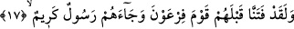

döndürsek siz yine önceden olduğu gibi inkâr ve tekzîbe dönersiniz, demiş oluyor. Allah
Teâlâ şöyle buyuruyor: “Geri gönderilselerdi, yine men olundukları şeyi yapmaya
dönerlerdi” (el-En’âm, 6/28)
Bu hususta üç tefsir olduğu anlaşılmaktadır ki, bunlar bu dumanın kıyâmet
alâmetlerinden olduğu, Türklerle yapılacak savaş olduğu ve mahşerde olacak oluşudur.
Bunlardan birincisi yani bu dumanın kıyâmet alâmetlerinden olması Kur’ân’ın siyâk-
sibâk üslûbu gereği ortaya çıkan söz akışı kesin olarak bunu gerektirmektedir.
Baklî’nin Arâis’inde şöyle denilmektedir: Âyetin zâhirinden anlaşılan zâhirde
kâfirlerin açlıktan kaynaklanan dumanıdır. Bâtındaki (iç âlemlerindeki) dumana gelince
bu da onların gaflet karanlığı ve şehvet tozlarıyla değişen gönül semâlarına âid muhtelif
hevâ ve heveslerinin ve nefs-i emmârenin dumanıdır.
Sehl (k.s.) şöyle demiştir: Dünyâdaki duman, kalp katılığı ve zikirden gâfil olmaktır.
et-Te’vîlâtü’n-Necmiyye’de şöyle denilmiştir: Âyette beşeriyet vasıflarının dumanının
yükselmesine karşı kalp semâsının murâkabe edilmesine işâret vardır. Bu duman,
insanları Hakk’a mahsus müşâhedelerden perdeler ki, işte bu, müşâhede erbâbı için
elîm bir azabdır. Bu mânâda Seriyy-i Sakatî (k.s.) şöyle duâ etmektedir: “Allahım!
Bana nasıl azâb edersen et de, müşâhedelerinden perdelenme zilletiyle azâb etme!
Rabbimiz bizden hicâb azâbını kaldır. Elbette biz senin perdeyi kaldırmaya da,
sarkıtmaya da kadir olduğuna inanıyoruz.”
Onlar sıkışıp da yardım ve feryâd çığlıkları atmaya başladıklarında, “Artık onlar
nasıl düşünüp öğüt alacaklar” denilecektir. Çünkü onlara takvâ ve isyânlarını ilhâm
eden apaçık bir elçi geldiği halde onlar ona muhâlefet ettiler. Ve bu şeytânî bir
kuruntudur dediler. Biz dünyâda onların sûretinden azâbı azıcık kaldırırız. Zîra bize
göre dünyânın tamamı zaten azdır. Fakat bir de yakalayıp büyük bir darbeyle
vurduğumuz gün onları uzun ve sonsuz bir hüzne boğarız. Artık onlar bizim intikamızın
şaşkınlığı içerisinde dinlenecek yer bulamazlar.
Fakir (Bursevî) der ki: Bütün bu îzâhlardan ortaya çıkan şudur: Bu dumanın zâhirinde
de, bâtınında da hayır yoktur. Görmez misin ki rüyâda duman gören kişinin rüyâsı bile
büyük sıkıntı, çetin savaş, karanlıklar, perdeler ve bir takım bulanıklıklarla tâbir
edilmektedir! Şu halde akıllı insana lâzım olan şey, karanlıklardan aydınlığa çıkmaya,
safâ ve huzûr dâiresine girmeye çalışmaktır. Şâyet kişi varlık dumanıyla baş başa
kalırsa maksûd olan Zât’ın cemâli ona örtülü kalır.
17. Andolsun, onlardan önce Firavun toplumunu da (imkânlar vererek) sınadık.
Onlara değerli bir elçi geldi, (şöyle diyerek):
“Andolsun, onlardan” Mekke kâfirlerinden önce “önce Firavun toplumunu”